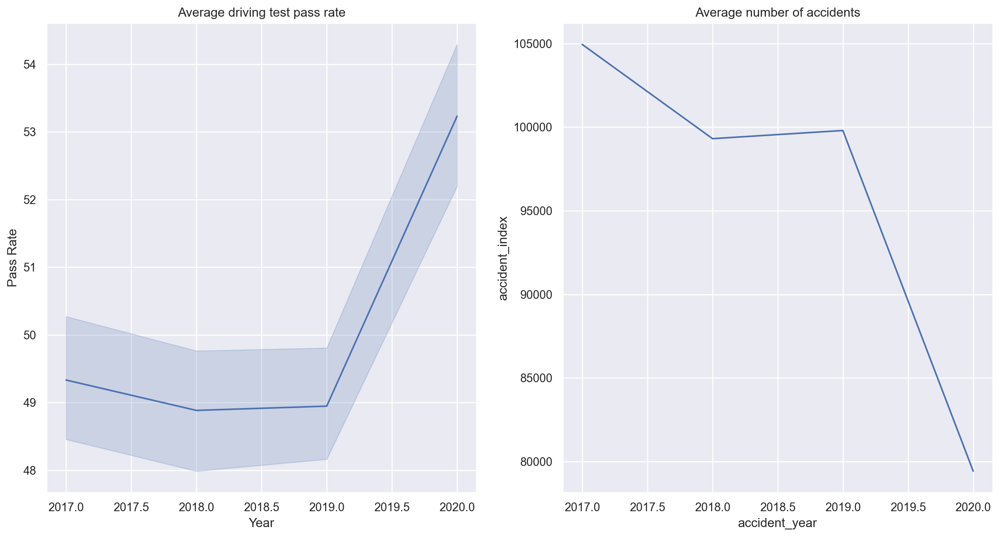

Code
import pandas as pd
import numpy as np
# Plotting
import matplotlib.pyplot as plt
import seaborn as sns
# Statistical Analysis
import statsmodels.formula.api as smf
import statsmodels.api as sm
sns.set(rc={"figure.figsize": (16, 8)})In this data-driven investigation, we will use statistics and Python to explore the potential association between driving test pass rates and the number of road accidents.
import pandas as pd
import numpy as np
# Plotting
import matplotlib.pyplot as plt
import seaborn as sns
# Statistical Analysis
import statsmodels.formula.api as smf
import statsmodels.api as sm
sns.set(rc={"figure.figsize": (16, 8)})The data used in this analysis was collected from publicly available resources. The driver test centre data was collected from:
The accident data was collected from STATS19. Further information on how to access this data can be found here: https://docs.ropensci.org/stats19/index.html
After collecting the data, I used web scrapping to find the postcode of each driving test centre. I then used GeoPy to extract the latitude and longitude from the postcodes. I mapped the coordinates of each accident to the coordinates of the nearest driving centre using the haversine formula:
\[ haversin\left(\frac{d}{r}\right) = haversin\left(\phi_{1} - \phi_{2}\right) + cos\left(\phi_{1}\right)cos\left(\phi_{2}\right)haversin\left(\lambda_{1} - \lambda_{2}\right), \]
where \(r\) is the radius of the earth, \(d\) is the distance between two points, \(\phi_{1}, \phi_{2}\) are the latitudes of the two points and \(\lambda_{1}, \lambda_{2}\) are the longitudes of the two points.
Let’s load the data and see what information we have!
data = pd.read_csv('crashes_merged_2017_to_2020.csv',
engine='pyarrow',
encoding='ISO-8859-1')data.head(10)| accident_index | accident_year | accident_severity | number_of_vehicles | number_of_casualties | nearest_test_centre | 2020_passrate | 2019_passrate | 2018_passrate | 2017_passrate | 2020_conducted | 2019_conducted | 2018_conducted | 2017_conducted | |
|---|---|---|---|---|---|---|---|---|---|---|---|---|---|---|
| 0 | 2.017010e+12 | 2017 | Fatal | 2 | 3 | Tottenham | 43.046875 | 39.634783 | 37.53915 | 37.65838824 | 1280 | 5750.0 | 4470.0 | 3946 |
| 1 | 2.017010e+12 | 2017 | Slight | 2 | 1 | Tottenham | 43.046875 | 39.634783 | 37.53915 | 37.65838824 | 1280 | 5750.0 | 4470.0 | 3946 |
| 2 | 2.017010e+12 | 2017 | Slight | 2 | 4 | Tottenham | 43.046875 | 39.634783 | 37.53915 | 37.65838824 | 1280 | 5750.0 | 4470.0 | 3946 |
| 3 | 2.017010e+12 | 2017 | Slight | 2 | 1 | Tottenham | 43.046875 | 39.634783 | 37.53915 | 37.65838824 | 1280 | 5750.0 | 4470.0 | 3946 |
| 4 | 2.017010e+12 | 2017 | Slight | 2 | 1 | Tottenham | 43.046875 | 39.634783 | 37.53915 | 37.65838824 | 1280 | 5750.0 | 4470.0 | 3946 |
| 5 | 2.017010e+12 | 2017 | Slight | 2 | 1 | Tottenham | 43.046875 | 39.634783 | 37.53915 | 37.65838824 | 1280 | 5750.0 | 4470.0 | 3946 |
| 6 | 2.017010e+12 | 2017 | Slight | 1 | 1 | Tottenham | 43.046875 | 39.634783 | 37.53915 | 37.65838824 | 1280 | 5750.0 | 4470.0 | 3946 |
| 7 | 2.017010e+12 | 2017 | Slight | 2 | 1 | Tottenham | 43.046875 | 39.634783 | 37.53915 | 37.65838824 | 1280 | 5750.0 | 4470.0 | 3946 |
| 8 | 2.017010e+12 | 2017 | Slight | 1 | 1 | Tottenham | 43.046875 | 39.634783 | 37.53915 | 37.65838824 | 1280 | 5750.0 | 4470.0 | 3946 |
| 9 | 2.017010e+12 | 2017 | Slight | 2 | 1 | Tottenham | 43.046875 | 39.634783 | 37.53915 | 37.65838824 | 1280 | 5750.0 | 4470.0 | 3946 |
For each accident, we have accident_severity: the severity of the accident - Slight, Serious or Fatal. The number_of_vehicles and number_of_casualties in each accident. The year of the accident, accident_year. The nearest_test_centre to the accident, along with the pass rates for the years 2020_passrate, 2019_passrate, 2018_passrate and 2017_passrate, along with the respective 20XX_conducted the number of tests conducted for that year.
We will first check the data for any errors that may have been inherited from Excel.
data.dtypesaccident_index float64
accident_year int64
accident_severity object
number_of_vehicles int64
number_of_casualties int64
nearest_test_centre object
2020_passrate object
2019_passrate float64
2018_passrate float64
2017_passrate object
2020_conducted object
2019_conducted float64
2018_conducted float64
2017_conducted object
dtype: objectSome features we expect to be numeric are being loaded as objects, this is most likely due to loading missing values incorrectly.
data = data[~(data == '').any(axis=1)]
data = data[~(data == '..').any(axis=1)]data['2020_passrate'] = data['2020_passrate'].astype('float64')
data['2017_passrate'] = data['2017_passrate'].astype('float64')
data['2020_conducted'] = data['2020_conducted'].astype('float64')
data['2017_conducted'] = data['2017_conducted'].astype('float64')data.isna().sum()accident_index 52858
accident_year 0
accident_severity 0
number_of_vehicles 0
number_of_casualties 0
nearest_test_centre 0
2020_passrate 0
2019_passrate 0
2018_passrate 0
2017_passrate 0
2020_conducted 0
2019_conducted 0
2018_conducted 0
2017_conducted 0
dtype: int64The data now looks to be correct. Next, we will plot the average driving test pass rate and the average number of accidents over the observed period.
fig, (ax1, ax2) = plt.subplots(ncols=2, sharex=True)
sns.lineplot(data=(data.groupby('nearest_test_centre').mean()[[
'2020_passrate', '2019_passrate', '2018_passrate', '2017_passrate'
]].rename(
columns={
'2017_passrate': 2017,
'2018_passrate': 2018,
'2019_passrate': 2019,
'2020_passrate': 2020
}).melt(var_name='Year', value_name='Pass Rate',
ignore_index=False).reset_index(drop=False)),
x='Year',
y='Pass Rate',
ax=ax1)
sns.lineplot(data=data.groupby('accident_year')['accident_index'].count(),
ax=ax2)
ax1.title.set_text('Average driving test pass rate')
ax2.title.set_text('Average number of accidents')
From the first plot, The pass rates of driving tests from 2017 to 2019 remained relatively stable, ranging from 48.88% to 49.33%. However, there was a noticeable increase in the pass rate to 53.23% in 2020. Similarly, the second plot shows a general decreasing trend in accident rates between 2017 and 2019, with a larger decrease in 2020. This spike in pass rates and a significant drop in accident rates could be due to various reasons, such as improved driving habits, improved road safety measures, or even the impact of the COVID-19 pandemic on testing and driving patterns. It is not conclusive at this stage if there is a direct association between the two results.
We will now create a new feature, passrate, that combines the four pass rate columns.
data['passrate'] = (data[[
'2017_passrate', '2018_passrate', '2019_passrate', '2020_passrate'
]].values[np.where(
data['accident_year'].values.reshape(-1, 1) == [2017, 2018, 2019, 2020])])Grouping the data by nearest_driving_test_centre and accident_year.
grouped_df = (data.assign(
slight_accident=data['accident_severity'] == 'Slight').assign(
serious_accident=data['accident_severity'] == 'Serious').assign(
fatal_accident=data['accident_severity'] == 'Fatal').groupby([
'nearest_test_centre', 'accident_year'
]).agg(passrate=('passrate', np.mean),
number_of_accidents=('nearest_test_centre', 'count'),
number_of_slight_accidents=('slight_accident', np.sum),
number_of_serious_accidents=('serious_accident', np.sum),
number_of_fatal_accidents=('fatal_accident',
np.sum)).reset_index(drop=False))We can now plot the distribution of the driving test pass rates, highlighting the year the test took place.
sns.histplot(data=grouped_df, x='passrate', hue='accident_year')<AxesSubplot:xlabel='passrate', ylabel='Count'>The histogram reinforces the conclusions seen earlier, the pass rates for 2017 to 2019 have a roughly similar shape. Whereas the pass rates for 2020 are more right-skewed. The mean pass rate over the 4 years is 50.0976998216524%
sns.histplot(data=grouped_df, x='number_of_accidents', hue='accident_year')<AxesSubplot:xlabel='number_of_accidents', ylabel='Count'>The histogram shows that the number of accidents per year is highly right-skewed for all 4 years. The mean number of accidents per year is 373.5821917808219. There appear to be many test centres with 0 or close to 0 accidents a year. To investigate this further, we will look at the test centres with extreme values for both the number of accidents and the pass rates.
Looking first at test centres with the lowest number of accidents and the highest pass rates.
grouped_df.sort_values(['number_of_accidents', 'passrate'],
ascending=[True, False]).head(10)| nearest_test_centre | accident_year | passrate | number_of_accidents | number_of_slight_accidents | number_of_serious_accidents | number_of_fatal_accidents | |
|---|---|---|---|---|---|---|---|
| 219 | Buckie | 2020 | 54.545455 | 4 | 1 | 2 | 1 |
| 247 | Campbeltown | 2020 | 76.470588 | 7 | 4 | 2 | 1 |
| 246 | Campbeltown | 2019 | 73.684211 | 7 | 4 | 3 | 0 |
| 217 | Buckie | 2018 | 57.094595 | 7 | 2 | 3 | 2 |
| 703 | Lochgilphead | 2020 | 74.074074 | 8 | 4 | 2 | 2 |
| 479 | Golspie | 2020 | 73.333333 | 8 | 6 | 2 | 0 |
| 1019 | Stranraer | 2020 | 67.500000 | 8 | 5 | 3 | 0 |
| 1015 | Stornoway | 2020 | 65.591398 | 8 | 5 | 2 | 1 |
| 459 | Girvan | 2020 | 63.636364 | 8 | 4 | 4 | 0 |
| 375 | Dunoon | 2020 | 62.745098 | 8 | 5 | 2 | 1 |
Unsurprisingly, the test centres with the lowest number of accidents are in areas that have low population sizes. The pass rates do appear to be significantly higher than the average for the dataset.
grouped_df.sort_values(['passrate', 'number_of_accidents'],
ascending=[False, True]).head(10)| nearest_test_centre | accident_year | passrate | number_of_accidents | number_of_slight_accidents | number_of_serious_accidents | number_of_fatal_accidents | |
|---|---|---|---|---|---|---|---|
| 443 | Fraserburgh | 2020 | 82.456140 | 11 | 5 | 6 | 0 |
| 679 | Lerwick | 2020 | 80.303030 | 11 | 7 | 4 | 0 |
| 379 | Duns | 2020 | 80.000000 | 13 | 3 | 8 | 2 |
| 635 | Kingussie | 2020 | 78.571429 | 13 | 7 | 4 | 2 |
| 701 | Lochgilphead | 2018 | 77.181208 | 22 | 15 | 6 | 1 |
| 476 | Golspie | 2017 | 76.712329 | 10 | 8 | 1 | 1 |
| 247 | Campbeltown | 2020 | 76.470588 | 7 | 4 | 2 | 1 |
| 703 | Lochgilphead | 2020 | 74.074074 | 8 | 4 | 2 | 2 |
| 246 | Campbeltown | 2019 | 73.684211 | 7 | 4 | 3 | 0 |
| 479 | Golspie | 2020 | 73.333333 | 8 | 6 | 2 | 0 |
Again, we can see that the high pass rate test centres have a low number of accidents. Now looking at the test centres with the highest number of accidents and the lowest pass rate
grouped_df.sort_values(['number_of_accidents', 'passrate'],
ascending=[False, True]).head(10)| nearest_test_centre | accident_year | passrate | number_of_accidents | number_of_slight_accidents | number_of_serious_accidents | number_of_fatal_accidents | |
|---|---|---|---|---|---|---|---|
| 572 | Hither Green (London) | 2017 | 46.643311 | 4306 | 3665 | 617 | 24 |
| 1140 | Wood Green (London) | 2017 | 38.481506 | 4297 | 3647 | 634 | 16 |
| 573 | Hither Green (London) | 2018 | 48.732903 | 4194 | 3529 | 648 | 17 |
| 574 | Hither Green (London) | 2019 | 48.579034 | 4097 | 3490 | 598 | 9 |
| 1141 | Wood Green (London) | 2018 | 39.565325 | 3802 | 3164 | 629 | 9 |
| 1142 | Wood Green (London) | 2019 | 41.515348 | 3765 | 3162 | 586 | 17 |
| 575 | Hither Green (London) | 2020 | 45.445577 | 3183 | 2703 | 472 | 8 |
| 1143 | Wood Green (London) | 2020 | 43.337881 | 2804 | 2406 | 387 | 11 |
| 612 | Isleworth (Fleming Way) | 2017 | 42.422118 | 1932 | 1659 | 263 | 10 |
| 613 | Isleworth (Fleming Way) | 2018 | 43.733762 | 1879 | 1545 | 326 | 8 |
From this, we notice a trend with the test centres. They all appear to be in London, the most densely populated area in the UK. This highlights a fundamental issue of the data, the number of accidents is not normalised by population size.
grouped_df.sort_values(['passrate', 'number_of_accidents'],
ascending=[True, False]).head(10)| nearest_test_centre | accident_year | passrate | number_of_accidents | number_of_slight_accidents | number_of_serious_accidents | number_of_fatal_accidents | |
|---|---|---|---|---|---|---|---|
| 415 | Erith (London) | 2020 | 29.806530 | 162 | 136 | 26 | 0 |
| 412 | Erith (London) | 2017 | 30.580880 | 212 | 178 | 33 | 1 |
| 898 | Rochdale (Manchester) | 2019 | 30.779165 | 277 | 210 | 61 | 6 |
| 414 | Erith (London) | 2019 | 31.618544 | 211 | 175 | 35 | 1 |
| 130 | Birmingham (South Yardley) | 2019 | 31.693198 | 890 | 762 | 127 | 1 |
| 107 | Belvedere (London) | 2020 | 32.560386 | 472 | 405 | 66 | 1 |
| 129 | Birmingham (South Yardley) | 2018 | 32.768549 | 884 | 766 | 113 | 5 |
| 104 | Belvedere (London) | 2017 | 32.875458 | 599 | 531 | 66 | 2 |
| 413 | Erith (London) | 2018 | 33.023107 | 227 | 185 | 38 | 4 |
| 105 | Belvedere (London) | 2018 | 33.225749 | 518 | 442 | 73 | 3 |
This shows that the lower pass rate test centres do have a higher number of accidents, but again we must highlight the test centres appear to be in highly populated areas.
We will now plot the pass rate against the number of accidents to investigate if there are any obvious trends.
sns.scatterplot(data=grouped_df,
x='passrate',
y='number_of_accidents',
hue='accident_year')<AxesSubplot:xlabel='passrate', ylabel='number_of_accidents'>The scatter plot shows evidence of a weak relationship between pass rate and the number of accidents, specifically, we can see that the test centres with low pass rates tend to have a higher number of accidents. We can also see that there appears to be greater volatility in the number of accidents for the lower pass rate test centres. There also appear to be some noticeable outliers, test centres that have a high number of accidents.
To further investigate the relationship, we will calculate the correlation matrix.
mask = np.triu(np.ones_like(grouped_df.corr(method='kendall'), dtype=bool))
cmap = sns.diverging_palette(230, 20, as_cmap=True)
sns.heatmap(grouped_df.corr(),
mask=mask,
cmap=cmap,
vmax=.3,
center=0,
square=True,
linewidths=.5,
cbar_kws={"shrink": .5},
annot=True)<AxesSubplot:>This matrix shows that there is evidence of a weak to moderate negative relationship between the pass rate and the number of accidents. This relationship is also consistent over the accident types, with the number of fatal accidents having the lowest correlation with pass rate. Earlier we proposed that the trend of pass rates increasing and accident numbers decreasing in 2020 was due to the driving restrictions in place during the Covid-19 pandemic. Does this hidden effect add uncertainty to these values? We will remove the year 2020 from the dataset and recalculate the correlation matrix.
mask = np.triu(
np.ones_like(
grouped_df[grouped_df['accident_year'] < 2020].corr(method='kendall'),
dtype=bool))
cmap = sns.diverging_palette(230, 20, as_cmap=True)
sns.heatmap(grouped_df[grouped_df['accident_year'] < 2020].corr(),
mask=mask,
cmap=cmap,
vmax=.3,
center=0,
square=True,
linewidths=.5,
cbar_kws={"shrink": .5},
annot=True)<AxesSubplot:>This matrix shows that the relationship is consistent before the pandemic.
We will now attempt to fit a linear regression model to investigate the relationship further.
sns.regplot(x='passrate', y='number_of_accidents', data=grouped_df)<AxesSubplot:xlabel='passrate', ylabel='number_of_accidents'>
model_1 = smf.ols(formula='number_of_accidents ~ passrate + accident_year',
data=grouped_df).fit()
print(model_1.summary()) OLS Regression Results
===============================================================================
Dep. Variable: number_of_accidents R-squared: 0.151
Model: OLS Adj. R-squared: 0.149
Method: Least Squares F-statistic: 103.4
Date: Wed, 17 May 2023 Prob (F-statistic): 4.66e-42
Time: 21:32:00 Log-Likelihood: -8568.3
No. Observations: 1168 AIC: 1.714e+04
Df Residuals: 1165 BIC: 1.716e+04
Df Model: 2
Covariance Type: nonrobust
=================================================================================
coef std err t P>|t| [0.025 0.975]
---------------------------------------------------------------------------------
Intercept 3.657e+04 1.99e+04 1.839 0.066 -2439.465 7.56e+04
passrate -18.3997 1.333 -13.806 0.000 -21.014 -15.785
accident_year -17.4747 9.855 -1.773 0.076 -36.810 1.861
==============================================================================
Omnibus: 1334.802 Durbin-Watson: 0.555
Prob(Omnibus): 0.000 Jarque-Bera (JB): 120015.268
Skew: 5.696 Prob(JB): 0.00
Kurtosis: 51.335 Cond. No. 3.69e+06
==============================================================================
Notes:
[1] Standard Errors assume that the covariance matrix of the errors is correctly specified.
[2] The condition number is large, 3.69e+06. This might indicate that there are
strong multicollinearity or other numerical problems.The adjusted R-squared value of 0.149 indicates that the model explains only 14.9% of the variance in the number_of_accidents.
The F-statistic of 103.4 and a p-value of 4.66e-42 indicate that the model as a whole is significant. This means that at least one of the independent variables in the model is significant in explaining the number_of_accidents.
For the individual independent variables, passrate has a t-statistic of -13.806 and a p-value of 0.000, indicating that it is significant in explaining the number_of_accidents. The accident_year variable has a t-statistic of -1.773 and a p-value of 0.076, indicating that it is not significant in explaining the number_of_accidents at the 5% significance level.
The coefficients of the regression indicate that for a 1 percent increase in passrate, the number_of_accidents decreases by 13.806 on average.
The Omnibus test has a p-value of 0.000, indicating that the residuals are not normally distributed. The Skew and Kurtosis values are also large and positive, indicating that the residuals are heavily skewed to the right and have a peaked distribution.
The condition number of 3.69e+06 is large, which indicates the presence of multicollinearity or other numerical problems. This could lead to unstable and unreliable regression coefficients and suggests that caution should be taken when interpreting the results.
pred_ols = model_1.get_prediction()
iv_l = pred_ols.summary_frame()["obs_ci_lower"]
iv_u = pred_ols.summary_frame()["obs_ci_upper"]
fig, ax = plt.subplots()
ax.plot(grouped_df['nearest_test_centre'],
grouped_df['number_of_accidents'],
"o",
label="data")
ax.plot(grouped_df['nearest_test_centre'],
model_1.fittedvalues,
"r--.",
label="OLS")
ax.plot(grouped_df['nearest_test_centre'], iv_u, "r--")
ax.plot(grouped_df['nearest_test_centre'], iv_l, "r--")
ax.legend(loc="best")<matplotlib.legend.Legend at 0x164c94f3af0>The plot of the observed values versus the fitted values with the confidence interval included shows that, for most test centres, the model fits the number_of_accidents between the confidence interval. There are several outliters, with test_centres have higher accident numbers than fitted. We will use an influence plot to investigate some of the outliers.
fig = sm.graphics.influence_plot(model_1, criterion="cooks")grouped_df[grouped_df['nearest_test_centre'] == grouped_df.iloc[572]
['nearest_test_centre']]| nearest_test_centre | accident_year | passrate | number_of_accidents | number_of_slight_accidents | number_of_serious_accidents | number_of_fatal_accidents | |
|---|---|---|---|---|---|---|---|
| 572 | Hither Green (London) | 2017 | 46.643311 | 4306 | 3665 | 617 | 24 |
| 573 | Hither Green (London) | 2018 | 48.732903 | 4194 | 3529 | 648 | 17 |
| 574 | Hither Green (London) | 2019 | 48.579034 | 4097 | 3490 | 598 | 9 |
| 575 | Hither Green (London) | 2020 | 45.445577 | 3183 | 2703 | 472 | 8 |
The Hither Green test centre accounts for outliers 572, 573, 574, and 575. We can see that the test centre has a below average pass rate and an extremely high number of accidents.
grouped_df[grouped_df['nearest_test_centre'] == grouped_df.iloc[443]
['nearest_test_centre']]| nearest_test_centre | accident_year | passrate | number_of_accidents | number_of_slight_accidents | number_of_serious_accidents | number_of_fatal_accidents | |
|---|---|---|---|---|---|---|---|
| 440 | Fraserburgh | 2017 | 63.576159 | 20 | 14 | 6 | 0 |
| 441 | Fraserburgh | 2018 | 60.251046 | 21 | 14 | 6 | 1 |
| 442 | Fraserburgh | 2019 | 66.115702 | 19 | 11 | 7 | 1 |
| 443 | Fraserburgh | 2020 | 82.456140 | 11 | 5 | 6 | 0 |
Outlier 443 is the Fraserburgh test centre in 2020. We can see in that year there was a massive improvement in pass rate and just over half the number of accidents compared to previous years.
As accident_year was noted to be statistically insignificant, we will run the analysis again without the accident_year feature. We will first create a new dataset, grouping by only nearest_driving_test_centre. This means for each driving test centre, we will have the total number of accidents over the four years.
grouped_df = (data.assign(
slight_accident=data['accident_severity'] == 'Slight').assign(
serious_accident=data['accident_severity'] == 'Serious').assign(
fatal_accident=data['accident_severity'] == 'Fatal').groupby([
'nearest_test_centre', 'accident_year'
]).agg(passrate=('passrate', np.mean),
number_of_accidents=('nearest_test_centre', 'count'),
number_of_slight_accidents=('slight_accident', np.sum),
number_of_serious_accidents=('serious_accident', np.sum),
number_of_fatal_accidents=('fatal_accident',
np.sum)).reset_index(drop=False))grouped_2_df = (grouped_df.groupby([
'nearest_test_centre',
]).agg(passrate=('passrate', np.mean),
number_of_accidents=('number_of_accidents', np.mean),
number_of_slight_accidents=('number_of_slight_accidents', np.mean),
number_of_serious_accidents=('number_of_serious_accidents', np.mean),
number_of_fatal_accidents=('number_of_fatal_accidents',
np.mean)).reset_index(drop=False))grouped_2_df| nearest_test_centre | passrate | number_of_accidents | number_of_slight_accidents | number_of_serious_accidents | number_of_fatal_accidents | |
|---|---|---|---|---|---|---|
| 0 | Aberdeen North | 54.854631 | 105.75 | 70.00 | 34.25 | 1.50 |
| 1 | Aberdeen South (Cove) | 57.237618 | 57.25 | 35.25 | 20.25 | 1.75 |
| 2 | Abergavenny | 58.753888 | 110.50 | 74.25 | 32.00 | 4.25 |
| 3 | Aberystwyth (Park Avenue) | 53.623044 | 120.00 | 91.75 | 25.75 | 2.50 |
| 4 | Airdrie | 47.398923 | 192.50 | 148.75 | 40.75 | 3.00 |
| ... | ... | ... | ... | ... | ... | ... |
| 287 | Workington | 53.100607 | 284.75 | 221.75 | 58.25 | 4.75 |
| 288 | Worksop | 55.829321 | 297.75 | 216.75 | 73.50 | 7.50 |
| 289 | Wrexham | 42.650556 | 218.25 | 161.50 | 53.50 | 3.25 |
| 290 | Yeovil | 62.411467 | 348.00 | 289.00 | 53.25 | 5.75 |
| 291 | York | 52.422700 | 441.75 | 371.00 | 63.75 | 7.00 |
292 rows × 6 columns
model_2 = smf.ols(formula='number_of_accidents ~ passrate',
data=grouped_2_df).fit()
print(model_2.summary()) OLS Regression Results
===============================================================================
Dep. Variable: number_of_accidents R-squared: 0.158
Model: OLS Adj. R-squared: 0.155
Method: Least Squares F-statistic: 54.24
Date: Wed, 17 May 2023 Prob (F-statistic): 1.85e-12
Time: 21:32:11 Log-Likelihood: -2136.4
No. Observations: 292 AIC: 4277.
Df Residuals: 290 BIC: 4284.
Df Model: 1
Covariance Type: nonrobust
==============================================================================
coef std err t P>|t| [0.025 0.975]
------------------------------------------------------------------------------
Intercept 1399.5167 140.937 9.930 0.000 1122.128 1676.905
passrate -20.4787 2.781 -7.365 0.000 -25.952 -15.006
==============================================================================
Omnibus: 366.583 Durbin-Watson: 2.150
Prob(Omnibus): 0.000 Jarque-Bera (JB): 27816.188
Skew: 5.653 Prob(JB): 0.00
Kurtosis: 49.459 Cond. No. 334.
==============================================================================
Notes:
[1] Standard Errors assume that the covariance matrix of the errors is correctly specified.This model appears to be a slight improvement to the previous model:
pred_ols = model_2.get_prediction()
iv_l = pred_ols.summary_frame()["obs_ci_lower"]
iv_u = pred_ols.summary_frame()["obs_ci_upper"]
fig, ax = plt.subplots()
ax.plot(grouped_2_df['nearest_test_centre'],
grouped_2_df['number_of_accidents'],
"o",
label="data")
ax.plot(grouped_2_df['nearest_test_centre'],
model_2.fittedvalues,
"r--.",
label="OLS")
ax.plot(grouped_2_df['nearest_test_centre'], iv_u, "r--")
ax.plot(grouped_2_df['nearest_test_centre'], iv_l, "r--")
ax.legend(loc="best")<matplotlib.legend.Legend at 0x164ca992f50>The plot of the observed values versus the fitted values shows a similar number of outliers compared to the plot for model 1. We should note that model 2 was fit on 292 observations compared to 1168 for model 1. Therefore, we should expect a similar decrease in the number of outliers. We will now use an influence plot to investigate these outliers.
fig = sm.graphics.influence_plot(model_2, criterion="cooks")grouped_2_df[grouped_2_df['nearest_test_centre'] == grouped_2_df.iloc[143]
['nearest_test_centre']]| nearest_test_centre | passrate | number_of_accidents | number_of_slight_accidents | number_of_serious_accidents | number_of_fatal_accidents | |
|---|---|---|---|---|---|---|
| 143 | Hither Green (London) | 47.350206 | 3945.0 | 3346.75 | 583.75 | 14.5 |
grouped_2_df[grouped_2_df['nearest_test_centre'] == grouped_2_df.iloc[94]
['nearest_test_centre']]| nearest_test_centre | passrate | number_of_accidents | number_of_slight_accidents | number_of_serious_accidents | number_of_fatal_accidents | |
|---|---|---|---|---|---|---|
| 94 | Duns | 72.56084 | 16.75 | 9.75 | 6.0 | 1.0 |
The Hither Green test centre is once again an outlier with a lower than average pass rate and a very high number of accidents. Outlier 94 is the Duns test centre with an extremely high pass rate and low number of accidents.
We noted earlier that the true effect of pass rate on accident rates may be uncertain due to the number of accidents not accouting for differences in population size. Therefore, higher-population areas have a higher number of crashes. To attempt to mitigate this issue, we will use the number of driving tests conducted as a pseudo value for population size.
data['conducted'] = (data[[
'2017_conducted', '2018_conducted', '2019_conducted', '2020_conducted'
]].values[np.where(
data['accident_year'].values.reshape(-1, 1) == [2017, 2018, 2019, 2020])])grouped_df = (data.assign(
slight_accident=data['accident_severity'] == 'Slight').assign(
serious_accident=data['accident_severity'] == 'Serious').assign(
fatal_accident=data['accident_severity'] == 'Fatal').groupby([
'nearest_test_centre', 'accident_year'
]).agg(passrate=('passrate', np.mean),
conducted=('conducted', np.mean),
number_of_accidents=('nearest_test_centre', 'count'),
number_of_slight_accidents=('slight_accident', np.sum),
number_of_serious_accidents=('serious_accident', np.sum),
number_of_fatal_accidents=('fatal_accident',
np.sum)).reset_index(drop=False))We divide the number of accidents by the number of tests conducted and multiply by 1000 to get the number of accidents per 1000 tests (or people).
grouped_df['accidents_adjusted'] = grouped_df[
'number_of_accidents'] / grouped_df['conducted'] * 1000
grouped_df['slight_adjusted'] = grouped_df[
'number_of_slight_accidents'] / grouped_df['conducted'] * 1000
grouped_df['serious_adjusted'] = grouped_df[
'number_of_serious_accidents'] / grouped_df['conducted'] * 1000
grouped_df['fatal_adjusted'] = grouped_df[
'number_of_fatal_accidents'] / grouped_df['conducted'] * 1000
grouped_df = grouped_df[[
'nearest_test_centre', 'passrate', 'accidents_adjusted', 'slight_adjusted',
'serious_adjusted', 'fatal_adjusted'
]]grouped_2_df = (grouped_df.groupby([
'nearest_test_centre',
]).agg(passrate=('passrate', np.mean),
accidents_adjusted=('accidents_adjusted', np.mean),
slight_adjusted=('slight_adjusted', np.mean),
serious_adjusted=('serious_adjusted', np.mean),
fatal_adjusted=('fatal_adjusted', np.mean)).reset_index(drop=False))grouped_2_df| nearest_test_centre | passrate | accidents_adjusted | slight_adjusted | serious_adjusted | fatal_adjusted | |
|---|---|---|---|---|---|---|
| 0 | Aberdeen North | 54.854631 | 39.120405 | 23.829155 | 14.723623 | 0.567628 |
| 1 | Aberdeen South (Cove) | 57.237618 | 20.764980 | 12.104572 | 7.899692 | 0.760715 |
| 2 | Abergavenny | 58.753888 | 36.992872 | 24.321708 | 11.431776 | 1.239388 |
| 3 | Aberystwyth (Park Avenue) | 53.623044 | 169.516180 | 130.009211 | 36.264133 | 3.242836 |
| 4 | Airdrie | 47.398923 | 74.426218 | 53.775133 | 18.387963 | 2.263122 |
| ... | ... | ... | ... | ... | ... | ... |
| 287 | Workington | 53.100607 | 167.157629 | 126.844385 | 37.030612 | 3.282632 |
| 288 | Worksop | 55.829321 | 106.139175 | 74.833260 | 28.565052 | 2.740863 |
| 289 | Wrexham | 42.650556 | 77.457255 | 56.728892 | 19.529580 | 1.198783 |
| 290 | Yeovil | 62.411467 | 98.353587 | 81.594604 | 14.977450 | 1.781533 |
| 291 | York | 52.422700 | 94.550250 | 78.899257 | 13.950239 | 1.700754 |
292 rows × 6 columns
sns.regplot(x='passrate', y='accidents_adjusted', data=grouped_2_df)<AxesSubplot:xlabel='passrate', ylabel='accidents_adjusted'>The scatterplot of pass rate and adjusted accident rates now shows evidence of a positive linear association. Note that there appears to be a fairly large outlier at around ~61% pass rate and ~1190 adjusted accidents.
mask = np.triu(np.ones_like(grouped_2_df.corr(method='kendall'), dtype=bool))
cmap = sns.diverging_palette(230, 20, as_cmap=True)
sns.heatmap(grouped_df.corr(method='kendall'),
mask=mask,
cmap=cmap,
vmax=.3,
center=0,
square=True,
linewidths=.5,
cbar_kws={"shrink": .5},
annot=True)<AxesSubplot:>The correlation matrix also shows a positive association between pass rate and the adjusted accident rates. The strongest association is between pass rate and fatal accidents.
model_3 = smf.ols(formula='accidents_adjusted ~ passrate',
data=grouped_2_df).fit()
print(model_3.summary()) OLS Regression Results
==============================================================================
Dep. Variable: accidents_adjusted R-squared: 0.013
Model: OLS Adj. R-squared: 0.009
Method: Least Squares F-statistic: 3.751
Date: Wed, 17 May 2023 Prob (F-statistic): 0.0537
Time: 21:32:22 Log-Likelihood: -1760.9
No. Observations: 292 AIC: 3526.
Df Residuals: 290 BIC: 3533.
Df Model: 1
Covariance Type: nonrobust
==============================================================================
coef std err t P>|t| [0.025 0.975]
------------------------------------------------------------------------------
Intercept 48.0936 38.948 1.235 0.218 -28.563 124.750
passrate 1.4883 0.768 1.937 0.054 -0.024 3.001
==============================================================================
Omnibus: 345.971 Durbin-Watson: 2.023
Prob(Omnibus): 0.000 Jarque-Bera (JB): 21976.918
Skew: 5.171 Prob(JB): 0.00
Kurtosis: 44.223 Cond. No. 334.
==============================================================================
Notes:
[1] Standard Errors assume that the covariance matrix of the errors is correctly specified.Summary of the model:
pred_ols = model_3.get_prediction()
iv_l = pred_ols.summary_frame()["obs_ci_lower"]
iv_u = pred_ols.summary_frame()["obs_ci_upper"]
fig, ax = plt.subplots()
ax.plot(grouped_2_df['nearest_test_centre'],
grouped_2_df['accidents_adjusted'],
"o",
label="data")
ax.plot(grouped_2_df['nearest_test_centre'],
model_3.fittedvalues,
"r--.",
label="OLS")
ax.plot(grouped_2_df['nearest_test_centre'], iv_u, "r--")
ax.plot(grouped_2_df['nearest_test_centre'], iv_l, "r--")
ax.legend(loc="best")<matplotlib.legend.Legend at 0x164c597da50>fig = sm.graphics.influence_plot(model_3, criterion="cooks")grouped_2_df[grouped_2_df['nearest_test_centre'] == grouped_2_df.iloc[275]
['nearest_test_centre']]| nearest_test_centre | passrate | accidents_adjusted | slight_adjusted | serious_adjusted | fatal_adjusted | |
|---|---|---|---|---|---|---|
| 275 | Wellingborough | 61.390541 | 1165.93911 | 855.6676 | 275.021914 | 35.249596 |
The influence plot below highlights that the most influential outlier is the Wellingborough test centre. This test centre has an above average pass rate but extremely high number of accidents.
After normalising for population size, there no longer appears to be any evidence of an association between driving test pass rates and accident rates. We can show that the main driver of the effect shown in the first model was actually most likely the effect of differences in population size rather than the pass rate of the test centre.
grouped_df = (data.assign(
slight_accident=data['accident_severity'] == 'Slight').assign(
serious_accident=data['accident_severity'] == 'Serious').assign(
fatal_accident=data['accident_severity'] == 'Fatal').groupby([
'nearest_test_centre', 'accident_year'
]).agg(passrate=('passrate', np.mean),
conducted=('conducted', np.mean),
number_of_accidents=('nearest_test_centre', 'count'),
number_of_slight_accidents=('slight_accident', np.sum),
number_of_serious_accidents=('serious_accident', np.sum),
number_of_fatal_accidents=('fatal_accident',
np.sum)).reset_index(drop=False))
fig, (ax1, ax2) = plt.subplots(1, 2, sharex=True)
sns.scatterplot(data=grouped_df,
x='conducted',
y='passrate',
hue='accident_year',
ax=ax1)
sns.scatterplot(data=grouped_df,
x='conducted',
y='number_of_accidents',
hue='accident_year',
ax=ax2)
plt.show()The first plot shows that as the number of test conducted increases; the pass rate decreases. The second plot shows that as the number of tests conducted increases; the number of accidents increases. This shows the source of the negative association between pass rate and the number of accidents.